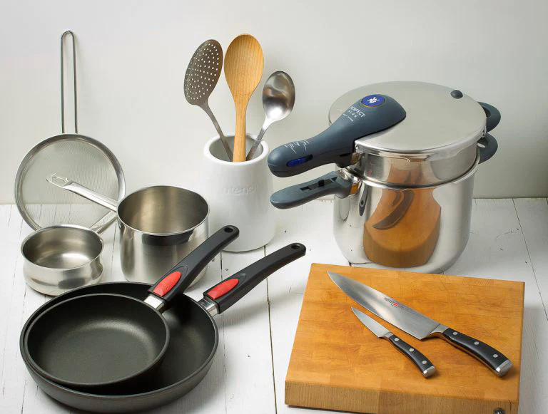

Sobre las comidas de Isabel
Ubicado en el corazón de la ciudad, el Restaurante de Isabel trae a la mesa lo mejor de la comida típica colombiana. Fundado en 2020, el Restaurante de Isabel se ha convertido en un destacado punto de referencia en la ciudad, atrayendo a nuevos comensales cada día.
Nuestra misión es clara: "Brindar placer culinario y calidad de vida a nuestros clientes".
Contamos con cocineros que aman el sabor de nuesta tierra, que siguen de cerca las tendencias culinarias y la evolución gastronómica, asegurándonos de ofrecer a nuestros clientes las delicias más actuales. Nuestro servicio sigue un estándar de excelencia y eficiencia, garantizando la calidad y la satisfacción de quienes nos eligen.
Nuestra Ubicación
Nuestro establecimiento está ubicado en el corazón de la ciudad.
Diferenciales
- Atención personalizada al cliente
- Menú innovador
- Ingrediente locales y naturales
- Un lugar acogedor
- Puntualidad
- Limpieza